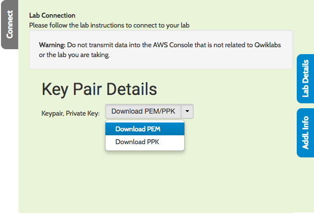

Welcome to the OpenShift Test Drive for Administrators
This lab guide is designed for self-paced walk-through of the "Container-Native Storage on OpenShift 3.5" hosted on redhat.qwkilab.com. This lab gives you access to a fully functional OpenShift Container Platform 3.5 environment hosted on Amazon Web Service.
1. Pre-requisites
For this lab you need to fulfill the following pre-requisites:
-
Workstation with Internet access
-
SSH client supporting authentication with a private key
2. How to start your Test Drive
To start the Test Drive press Start Lab button in the top bar.
3. How to access your lab guide
When you started your Test Drive the lab environment will provision in roughly 5 minutes. During this time you'll see a progress bar above this page.
When your lab infrastructure is ready this progress bar disappear. Click the Addl. Info button to retrieve the URL to your lab guide:
Open this URL in a new tab to view your personalized lab guide!
4. How to access the lab environment
When your lab infrastructure is ready click the Connect button and download the SSH private key to your computer:

⇨ To login via SSH download the PEM file to your machine and change the permissions:
chmod 0400 ~/Downloads/<pem-file-name>
Click the Addl. Info button again to retrieve IP address of your environment:
⇨ Then login with the ssh client like this:
ssh -i ~/Downloads/<pem-file-name> -l cloud-user <MasterIPAddress>
Follow the lab guide to navigate the environment and conduct the prepared exercises.
Have fun!